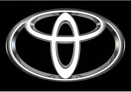

Discover Ford
The Ford Legacy
Founded in 1903 by Henry Ford, the brand revolutionized the
automotive industry by introducing mass production with the iconic
Model T. Today, Ford stands for reliability, innovation, and a rich
automotive heritage that spans over a century.
Ford in Focus: Two Iconic Models
Ford Mustang - A legendary coupe known for its bold
design and powerful engine. A true symbol of freedom and
performance.
Ford Explorer - A versatile SUV built for both city
life and adventure. Spacious, dependable, and equipped with modern
tech.
What Drivers Say
"The Mustang gave me real driving emotions. You can feel the car
is alive!"
- Alex, Kyiv
"The Explorer turned out to be the perfect family car. Reliable,
roomy, and never failed us, even in winter."
- Olga, Lviv
back to menu

Legend of Reliability: TOYOTA
The Toyota Journey
Founded in 1937 in Japan, Toyota has grown into one of the world's
largest and most respected car manufacturers. Known for quality,
reliability, and innovation, Toyota has pioneered hybrid technology
and continues to lead the way in sustainability and engineering
excellence.
Toyota in Focus: Two Standout Models
Toyota Corolla - A global bestseller known for its
efficiency, affordability, and low maintenance. Perfect for daily
driving.
Toyota RAV4 - A compact SUV that blends practicality
with adventure. Stylish, safe, and ready for any road.
What Drivers Say
"The Corolla is perfect for city life — smooth, economical, and
never lets me down."
— Emma, London
"I love my RAV4. It's spacious, great on fuel, and handles both
highways and mountain roads with ease."
- Carlos, Madrid
back to menu
BMW: Power, Precision, Prestige
The BMW Heritage
Founded in 1916 in Germany, BMW (Bayerische Motoren Werke) began as
an aircraft engine manufacturer. Today, it’s a global icon of
luxury, performance, and precision engineering. With its motto “The
Ultimate Driving Machine,” BMW is synonymous with driving pleasure
and innovation.
BMW in Focus: Two Signature Models
BMW 3 Series - A classic sport sedan combining
performance, comfort, and cutting-edge technology. A favorite among
enthusiasts and professionals alike.
BMW X5 - A luxury SUV that delivers power, space, and
refinement. Ideal for families who want both utility and prestige.
What Drivers Say
"My 3 Series feels like an extension of me — agile, responsive,
and pure joy on the road."
— Liam, Dublin
"The X5 gives me everything I need: power, comfort, and confidence
on any terrain."
— Nora, Munich
back to menu